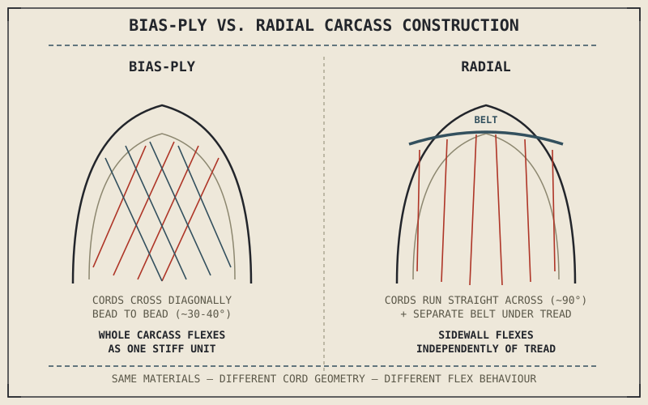

Cut a tyre in half and the rubber tread is only the part you'd notice first. Underneath it is a carcass of textile and steel cords, arranged in one of two fundamentally different geometric patterns, and that arrangement — not the tread pattern, not the compound — is what actually decides how the tyre flexes, generates heat, and holds its shape at speed. Bias-ply and radial construction are not two marketing tiers of the same idea. They are two different structural answers to the same problem.
Chapter 6.1 named grip, load-carrying, and shock absorption as a tyre's three simultaneous jobs, and closed by promising that pressure, flex, heat, and wear all behave differently depending on the construction underneath them. This chapter is where that construction gets explained.
What the Cords Are Actually Doing
A tyre carcass is built from layers of cord — historically textile, now often steel or synthetic composites in the belt — embedded in rubber and laid down at specific angles between the two beads that seat the tyre on the wheel rim. Those cords are what actually carry the tyre's structural load; the rubber around them provides the sealed air chamber, the tread surface, and the flexible matrix holding the cords in position, but the cords themselves are doing the mechanical work of holding the tyre's shape against internal air pressure and external cornering, braking, and load forces.
The angle at which those cords are laid relative to the direction of travel is the entire distinction between bias-ply and radial construction, and that single geometric choice cascades into nearly every practical difference the rest of this part will describe.
Bias-Ply: Cords on the Diagonal
A bias-ply tyre lays its cords diagonally across the carcass, crossing from bead to bead at an angle — typically somewhere in the range of 30 to 40 degrees to the direction of travel — with successive layers crossing in alternating directions, like the plies in plywood. This diagonal, cross-layered structure makes the entire carcass, sidewall and tread included, flex together as one relatively stiff, unified unit. That stiffness gives a bias-ply tyre strong load-carrying capacity and good resistance to cuts and punctures from the side, which is part of why bias-ply construction remains common on cruisers, some touring bikes, and off-road tyres that face harsh, unpredictable terrain. The trade-off is that the sidewall and tread can't flex independently of each other, which limits how precisely the tyre can maintain a consistent, wide contact patch as the bike leans into a corner.
Bias-ply cords cross diagonally so the whole carcass flexes as one stiff unit; radial cords run straight across so the tread and sidewall are free to flex independently. That one geometric choice is the real difference between the two constructions — everything else follows from it.

A bias-ply tyre carcass shown with cords crossing diagonally bead to bead, compared against a radial tyre carcass shown with cords running straight across at ninety degrees plus a separate reinforcing belt under the tread.
Radial: Cords Straight Across, Belt on Top
A radial tyre instead lays its main carcass cords running straight across, roughly perpendicular to the direction of travel — radiating out from the center the way spokes on a wheel do, which is where the name comes from — with a separate, stiffer belt of steel or aramid cords laid underneath the tread to control tread rigidity independently of the sidewall. This separation is the key structural advantage: the sidewall can flex to absorb bumps and maintain contact under lean, while the belt keeps the tread itself relatively stable and flat against the road, which helps the contact patch stay wider and more consistent through a corner than a bias-ply carcass typically allows. Radial construction also runs cooler at sustained high speed, since the independent sidewall flex generates less internal friction heat than a bias-ply carcass's unified flex does — a meaningful factor at the speeds sport and touring motorcycles sustain for extended periods.
A Common Misconception, Cleared Up Early
It's easy to assume radial construction is simply the "better," more modern version of bias-ply, the way radial car tyres largely replaced bias-ply ones decades ago. Motorcycle tyres don't map onto that same story cleanly. Radial construction's independent sidewall flex is a genuine advantage for sustained cornering grip and heat management, which is why it dominates sport and sport-touring applications — but that same flexibility can be a liability on a heavily loaded touring bike or an off-road machine facing sidewall impacts, where bias-ply's unified stiffness and puncture resistance are still the better engineering fit. Neither construction is universally superior; each is a correct answer to a different set of structural demands, the same pattern this book has now applied to nearly every design choice a motorcycle makes.
Where This Leads
Construction determines how a tyre can flex, but flex only matters because of what it does to the contact patch actually touching the road. Chapter 6.3 turns to that contact patch directly: its size, its shape, and why both change constantly as the bike leans, brakes, and accelerates.
Key Concepts to Remember
- A tyre's structural strength comes from cord layers embedded in the rubber carcass; the angle those cords are laid at is the fundamental distinction between bias-ply and radial construction.
- Bias-ply cords cross diagonally bead to bead, making the whole carcass flex as one stiff unit — strong load capacity and puncture resistance, but less precise contact-patch control under lean.
- Radial cords run straight across with a separate belt under the tread, letting the sidewall flex independently of the tread — better sustained cornering grip and heat management.
- Neither construction is universally better; each suits different demands — radial for sustained sport and touring cornering, bias-ply for heavy loads and puncture resistance.
Cross-References
| ← Ch. 6.1 | Named grip, load-carrying, and shock absorption as a tyre's three jobs and promised that construction determines how well each is performed; this chapter delivers that explanation. |
| → Ch. 6.3 | Covers the contact patch directly — its size, shape, and how both change under lean, braking, and acceleration. |